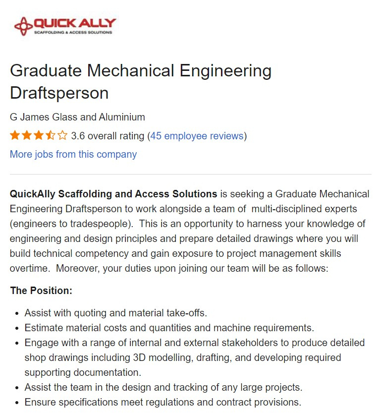

Introduction
Basic background: Australian born Chinese, Fourth year university student study at Royal Melbourne Institute of Technology. I am fluent in English and have basic knowledge of speaking mandarin and Japanese. My interest includes all forms of pop culture, technology, weightlifting, and socialising. Below you will find an image of an animated character I like. Zenitsu from Demon Slayer
Intrest in Information Technology
Information Technology
My interest in Information Technology predominately started with games, which I have played since primary school. As I progressed into high school, I was able to take up IT as an elective, in which I learnt of image editing, the basics of reading and typing in various programming languages, the basics of internet security, simple application making and basic game development. During the elective, my teacher at the time had the sparked my interest in IT, he had made the learning experience enjoyable, and I learnt that coding and designing applications and games was a fun way to have a creative output.
Education
I originally applied to the Royal Melbourne institute of technology, due to having a lower than required ATAR evaluation than expected. RMIT enabled me to continue my goals in studying in engineering, via a pathway from an associate degree to the Bachelor of Mechanical Engineering. After arriving to RMIT, I enjoyed the university study environment much more than the education of secondary school. I hope to continue my studies and graduate from RMIT.
Philosophy
Having chosen to study a Bachelor of Mechanical Engineering, I expected to learn new concepts in the field of engineering and how they applied to real world situations. As I had an interest in technology, I was eager to learn and develop my understanding of the everyday machinery around me. How they worked, how they were powered and how they were manufactured.
Ideal Job
For now, the ideal job I seek is being a Mechanical Engineering Draftsman. The expectations of the occupation include: Aiding the marketing staff with quoting the material cost and expenses. Designing and developing the 3D models of possible parts, whilst supplying the supporting documentation. Assisting and track the progress of designs in major projects. This job in particular interest me due to including one of the main areas of engineering I enjoy, which would be the modelling of possible parts used in the industry. The use of 3D models in manufacturing anything, allows for a much easier time to reconstruct and recreate possible parts and secure a safe copy being in digital form.
There are many qualifications and skills needed to acquire this type of job. Namely having completed a degree in higher education of engineering, and the being of proficient in of the many 3d modelling programs such as Auto CAD or Solid works. This job in particular is a graduate role, thus having the benefit of allowing students to apply for the role as soon as they graduate.
Regrettable, I do not currently have any extracurricular qualification or experience of working in the engineering field. My main experiences in the field, are my current studies at RMIT university and working in our areas of the general work force. However, due to my studies at RMIT, I do have knowledge of multiple concepts of mechanical engineering and have acceptable use in both the programs Solid works and Auto CAD.
The main priority right now in aiding myself to entering the workforce and getting this type of job, is graduating from university, and acquiring an internship at one of the many well established engineering firms. Whilst also, honing my skills at all possible programs which may aid me in the workforce.